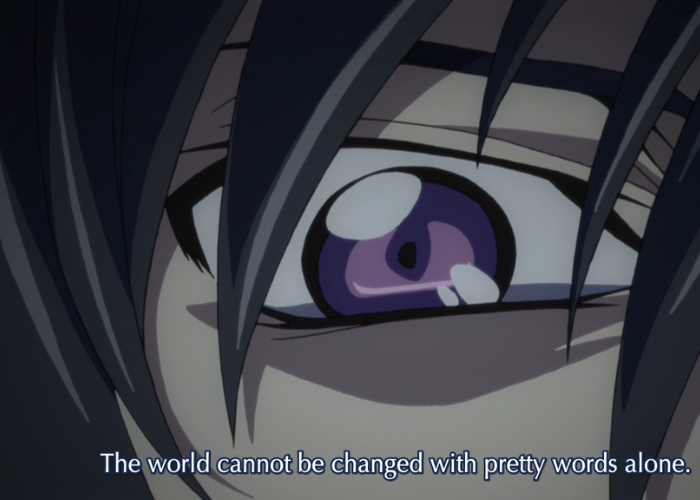
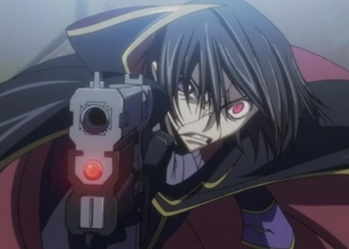
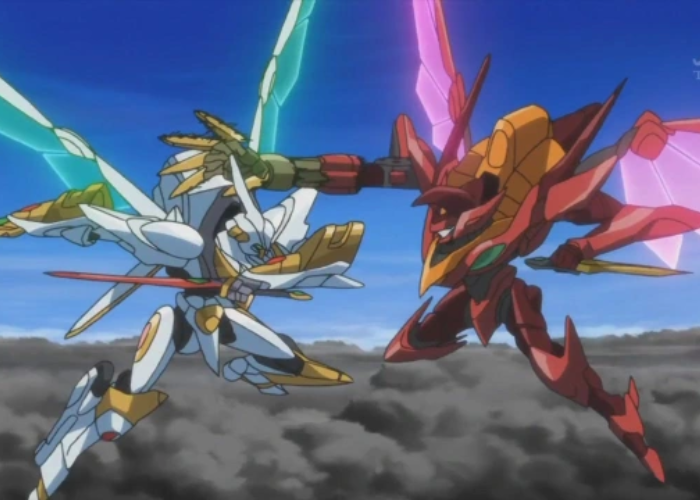
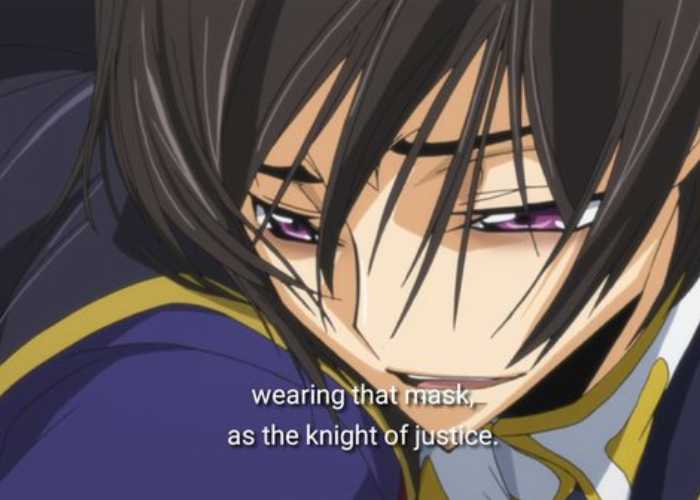
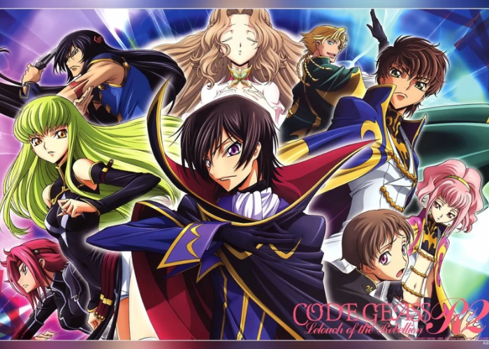

Lelouch Lamperouge's Rebellion: A Case for Code Geass as the Anime Pinnacle
The realm of "best anime of all time" is a fiercely contested battlefield, with countless contenders vying for the crown. Yet, amidst this glorious chaos, Code Geass: Lelouch of the Rebellion stands out as a genuine masterpiece. It transcends the limitations of the mecha genre, weaving a tapestry rich with political intrigue, intellectual warfare, and a moral ambiguity that grips viewers in a relentless hold.
Lelouch vi Britannia: A Hero or Villain?
Lelouch vi Britannia, the exiled prince at the narrative's core, is a protagonist unlike any other.
Thrust into exile and stripped of his birthright, Lelouch finds himself wielding the extraordinary
power of Geass – an ability to control minds with a single glance. Fueled by a burning desire to
create a world free from tyranny, particularly for his beloved sister Nunnally, Lelouch embarks on a
complex and ruthless mission. He becomes Zero, a masked vigilante who ignites a rebellion against
the very nation of his birth, the Britannian Empire. The lines between hero and villain are
constantly blurred. Lelouch's methods are often brutal, forcing viewers to grapple with the moral
complexities of his actions. We see the seeds of nobility in his ultimate goal - a world where his
sister can live free and unburdened. However, his ruthlessness and manipulation tactics raise
questions about the true cost of revolution and the burden of leadership.

The Price of Rebellion: A Look Beyond Glory

Code Geass doesn't shy away from depicting the gruesome realities of war and revolution. Lelouch's
rise to power comes at a heavy price, with innocent lives lost and unimaginable consequences
unfolding. Each strategic victory is tainted by the weight of casualties, forcing viewers to
confront the uncomfortable truth behind achieving a seemingly noble cause. The series masterfully
explores the multifaceted nature of human behavior, showcasing a cast of characters with nuanced
motivations and understandable desires, even on the opposing side of the conflict. We see characters
like Suzaku, Lelouch's childhood friend, who strives to maintain order within the broken system,
highlighting the lack of easy answers in this war-torn world.
A Feast for the Senses: Visuals and Soundscapes
Code Geass transcends its gripping narrative and complex characters with stunning visuals and a
captivating soundtrack. The animation, particularly in the action sequences featuring giant robots
known as Knightmares, is fluid and exhilarating. Traditional cel animation techniques imbue the
series with a unique artistic style, and the Knightmare designs themselves are lauded for their
intricate details and believable mechanics, making each clash between them a pulse-pounding
spectacle. The soundtrack perfectly complements the emotional weight of the story, with themes
ranging from rousing anthems that ignite the spirit to melancholic ballads that tug at the
heartstrings. These elements weave together to create an immersive experience that pulls viewers
deeper into Lelouch's world, solidifying Code Geass' place as a cult classic within the anime
community.

An Ending Unequaled: A Legacy Set in Stone

Even the most acclaimed masterpieces can falter in their final act, leaving audiences disappointed
or confused. Code Geass, however, stands as a defiant exception when it comes to its conclusion. The
series finale isn't just an episode; it's a meticulously crafted symphony of emotions and thematic
payoff. It leaves viewers in stunned silence, grappling with the immense consequences of Lelouch's
decisions and the bittersweet victory he achieves through cunning manipulation and immense
sacrifice. No other anime in recent memory has dared to craft such a complex and satisfying ending,
one that sparks fervent debate and lingers in the minds of fans like a phantom limb long after the
credits roll. This is a true testament to the brilliance of Code Geass. Its finale isn't merely a
fitting conclusion; it's a crowning achievement, a narrative high watermark etched in stone. It sets
a bar so impossibly high, so audacious in its execution, that few, if any, anime will ever be able
to match its sheer audacity and emotional resonance. The ending of Code Geass has become a legend in
its own right, a permanent fixture in the annals of anime history, forever sparking discussions and
leaving a lasting impression on every viewer who dares to witness Lelouch's rise and tragic fall.
A Lasting Legacy: Why Code Geass Deserves Your Attention
With its narrative that grips you from the first episode, characters that etch themselves into your
memory, and themes that spark philosophical debates that rage long after the finale, Code Geass
offers an anime experience unlike any other. It's a show that transcends the realm of mere
entertainment, leaving an indelible mark on your psyche long after the credits roll. So, the next
time you find yourself yearning for an anime that dives deeper, that challenges your preconceptions
and compels introspection, look no further than Code Geass: Lelouch of the Rebellion. It's a series
that will burrow into your thoughts, sparking passionate discussions and introspective analysis.
This enduring impact solidifies Code Geass' place as a serious contender for the title of anime's
crowning achievement, a landmark series that continues to resonate with viewers across generations.
